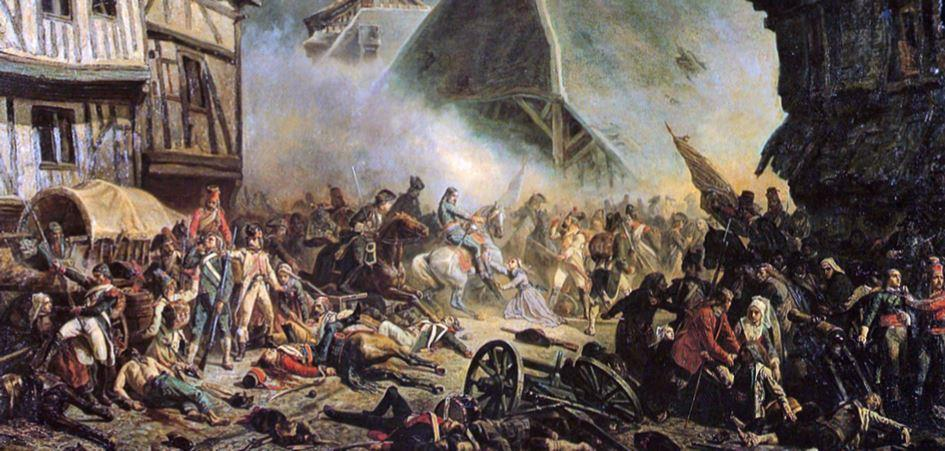
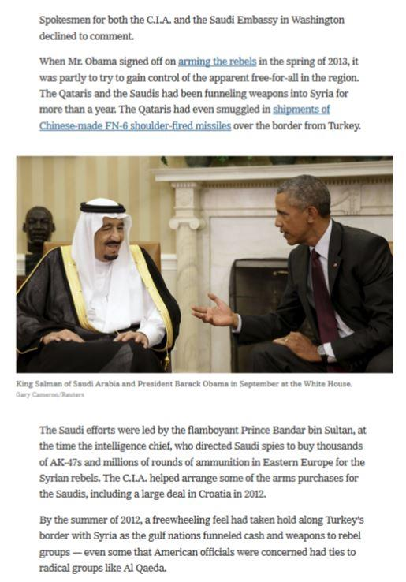
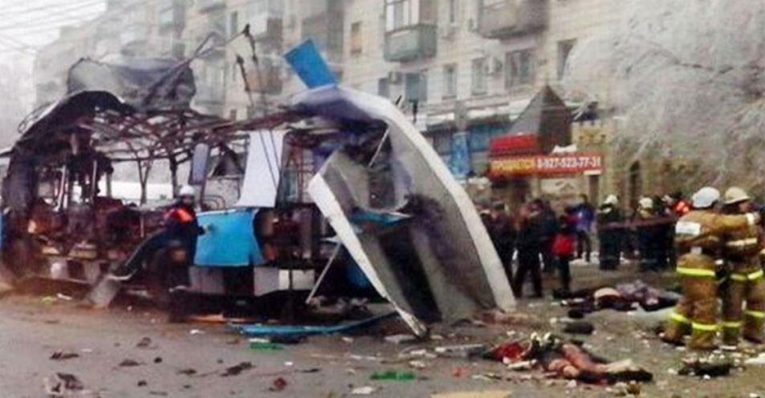

La plupart des auteurs s’accordent pour définir le terrorisme comme étant une méthode d’emploi de la terreur à des fins politiques, religieuses ou idéologiques. À ce titre, le génocide arménien de 1915 entre parfaitement dans la catégorie du terrorisme d’État visant à anéantir une partie de la population pour des raisons ethniques ou religieuses. L’emploi du mot terrorisme est attesté pour la première fois en France, en 1794, pour désigner la doctrine des partisans de la Terreur : Robespierre, Marat et leurs amis du bien mal nommé Comité de Salut Public. Nous remarquerons qu’il s’agissait déjà ici d’un terrorisme d’État, revendiqué et assumé comme tel, et destiné à éradiquer ou à mettre au pas tous ceux qui refusaient le nouvel ordre : Chouans, Vendéens, aristocrates, religieux, etc. et non pas d’un terrorisme dirigé contre un État par une faction politique ou religieuse quelconque.
Mais nous verrons que même si les actions terroristes semblent émaner d’organisations politiques, religieuses, voire de mafias ou encore nous dit-on maintenant de « loups solitaires », il y a presque toujours derrière, une main invisible qui finance, qui instruit, qui manipule et qui en fin de compte instrumentalise ce terrorisme pour servir un agenda caché. J’en donnerai une preuve tangible tout à l’heure.
Et je vous invite d’ailleurs à réfléchir une seconde à ce concept merveilleux inventé par Adam Smith1 qu’est celui de cette fameuse « main invisible » et qui permet, aussi bien en matière économique qu’en matière de terrorisme, de se défausser sur une entité anonyme – respectivement le Marché et le terrorisme islamique – pour expliquer les bouleversements économiques ou les atrocités que subissent nos sociétés.
Je rappellerais simplement qu’en général derrière une main il y a un bras, derrière ce bras il y a un corps surmonté d’une tête et c’est justement cette tête que je vous propose d’examiner maintenant.
Pour que les choses soient bien claires et pour écarter les amateurs de complots ou de conspirations cachées, il n’est pas nécessaire d’aller visiter les sites conspirationnistes ou présentés comme tels, il suffit d’ouvrir les yeux et de chercher au bon endroit pour découvrir la vérité. Pour étayer mon propos, je voudrais juste vous lire cet extrait traduit d’un article du New-York Times2 du 23 janvier 2016 (auteurs Mark Mazzetti et Mat Apuzzo) et consacré au terrorisme islamique:
Je cite :
« Lorsque le Président Obama a secrètement autorisé la Central Intelligence Agency à commencer à armer les combattants rebelles de Syrie en 2013, l’agence d’espionnage savait qu’elle aurait un partenaire disposé à aider à financer l’opération clandestine. C’était le même partenaire sur lequel la CIA s’est appuyée pendant des décennies pour son argent et sa discrétion dans les conflits lointains: le royaume d’Arabie saoudite.
Depuis lors, la CIA et son homologue saoudienne maintiennent un accord inhabituel pour la mission d’entraînement des rebelles, à laquelle les Américains ont donné le nom de code de Timber Sycamore. Avec cet accord, selon d’actuels et anciens hauts fonctionnaires, les Saoudiens fournissent à la fois des armes [vendues par les USA, NdSF] et de grosses sommes d’argent, et la CIA dirige l’entraînement des rebelles au maniement des fusils d’assaut AK-47 et des missiles antichars.
Le soutien aux rebelles syriens n’est que le chapitre en cours d’une relation qui dure depuis des dizaines d’années entre les services d’espionnage d’Arabie saoudite et les États-Unis, une alliance qui a traversé le scandale Iran-Contra, le soutien des moudjahidines contre les Soviétiques en Afghanistan et les combats par procuration en Afrique…
‘… Ils ont compris qu’ils ont besoin de nous, et nous comprenons que nous avons besoin d’eux”, a déclaré Mike Rogers, originaire du Michigan, ancien membre républicain du Congrès…
…Les hauts fonctionnaires n’ont pas révélé le montant de la contribution saoudienne, bien plus importante que celle des autres nations, au programme d’armement des rebelles contre l’armée du président Bachar el-Assad. Mais on estime le coût total de l’armement et de l’entraînement à plusieurs milliards de dollars… »
Fin de citation.
Nous avons donc ici – publié dans le journal de référence de l’oligarchie étasunienne – l’aveu extraordinaire de l’implication de deux États souverains (USA et Arabie Saoudite) pour le financement et l’entraînement – depuis des décennies – du terrorisme islamique utilisé comme moyen d’action depuis la guerre en Afghanistan contre l’URSS jusqu’à la guerre de Syrie toujours en cours et qui pourrait demain déraper vers un conflit mondial opposant la Russie, l’Iran et la Chine à l’occident.
assan-al-Banna, le fondateur des Frères musulmans. Crédit : lightforlearner. wordpress.comPour élargir notre propos, n’oublions pas non plus le rôle que les Anglais ont joué dans l’apparition des Frères musulmans en Égypte dans les années 20 du XXème siècle. Et que sont les Frères musulmans, si ce n’est une espèce de confrérie islamique destinée sinon à servir, du moins à appuyer les intérêts anglo-saxons, partout où elle s’est installée ?
Quel intérêt pour l’occident d’utiliser l’islam à des fins terroristes ?
Il faut bien préciser ici de quel islam on parle. L’islam utilisé pour terroriser les populations musulmanes ou chrétiennes est un islam rigoriste d’inspiration wahhabite ou salafiste et ne représente qu’une minorité parmi les mahométans. La majorité des musulmans dans le monde est largement pacifique et ne prétend pas à la conversion forcée de ceux qui ne professent pas la même foi. Il n’est pour s’en convaincre que d’aller en Russie pour s’apercevoir qu’un islam tolérant est parfaitement compatible avec une société majoritairement chrétienne.
L’intérêt pour l’occident d’instrumentaliser cet islam radical est triple :
Il permet d’utiliser des mercenaires fanatisés comme « proxies » et sans intervenir directement, il permet, en utilisant ces terroristes-mercenaires, de favoriser la déstabilisation de pays-cibles : URSS durant la guerre d’Afghanistan, Russie durant les guerres de Tchétchénie et Chine avec les séparatistes Ouïgours.
Il permet d’assurer le contrôle des populations par la terreur en imposant des reculs démocratiques après la commission des attentats. Je rappelle pour mémoire que les États-Unis ont abandonné l’habeas corpus en 2001 avec le Patriot Act qui permet à une autorité administrative de faire incarcérer – sans limite de temps – toute personne suspectée de liens avec le terrorisme et cela sans aucune motivation ni aucun contrôle de quelque juridiction que ce soit.
Il permet de justifier la stratégie du choc des civilisations opposant, entre autres, l’occident anglo-saxon et ses valeurs « progressistes » à un islam largement caricaturé et présenté comme rétrograde.

Attentat à Volgograd en décembre 2013
Pour conclure, je dirais que la Russie comme la France ont été ces dernières années, deux des nations les plus durement touchées par le terrorisme et, à ce titre, elles se doivent de lutter ensemble pour conjurer le péril.
Le terrorisme islamique tel que nous le voyons à l’œuvre peut servir beaucoup d’intérêts mais certainement pas la cause de l’islam. En revanche son instrumentalisation est certainement très utile pour faire avancer d’autres causes dont je ne suis pas certain qu’elles apporteront le bonheur à l’humanité.
E.L.
Notes :
1. Adam Smith (5 juin 1723 - 17 juillet 1790) est un philosophe et économiste écossais des Lumières. Il reste dans l’histoire comme le père des sciences économiques modernes, dont l'œuvre principale, publiée en 1776, La Richesse des nations, est un des textes fondateurs du libéralisme économique. Professeur de philosophie morale à l'université de Glasgow, il consacre dix années de sa vie à ce texte qui inspire les grands économistes suivants, ceux que Karl Marx appellera les « classiques » et qui poseront les grands principes du libéralisme économique. La plupart des économistes considèrent Smith comme « le père de l’économie politique » ; pourtant, certains, comme Joseph Schumpeter ou Murray Rothbard, l’ont défini comme un auteur mineur, considérant que son œuvre comportait peu d’idées originales et que ces dernières étaient pour beaucoup fausses
Partager cette page